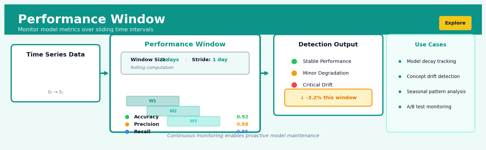
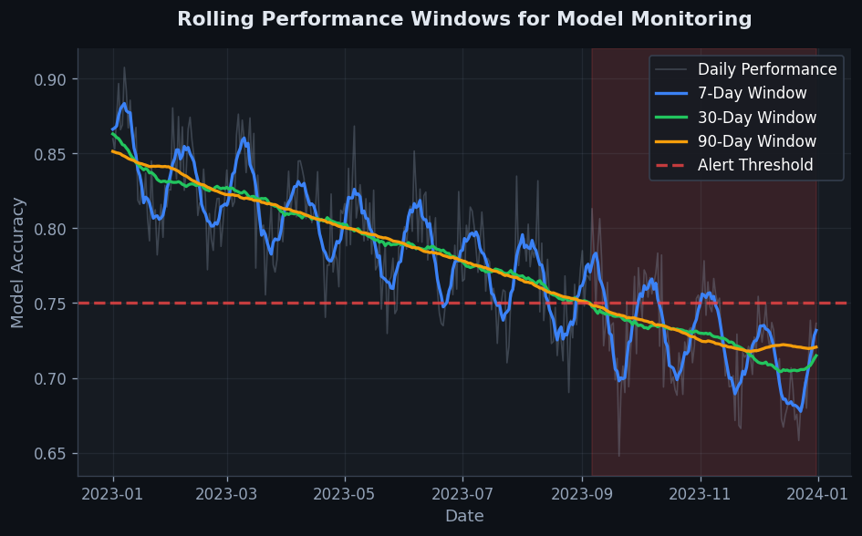
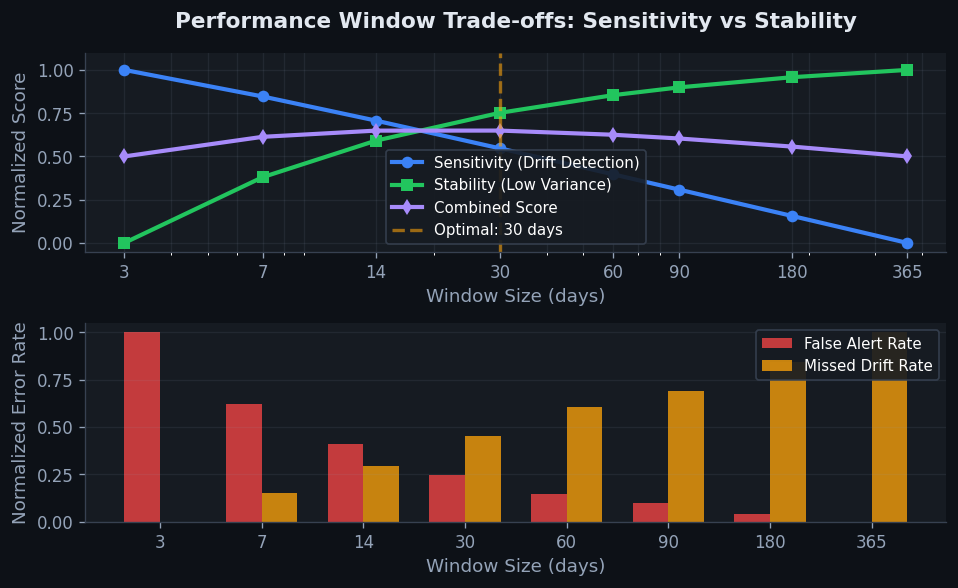

Performance Window#


Most teams set their performance window too wide and miss early degradation signals. I've found that matching your window size to your model's retraining cadence is critical—if you retrain weekly, a 7-day window with daily stride gives you actionable alerts before performance tanks. The biggest mistake is treating all metrics equally when some degrade faster than others, so always weight precision and recall separately in production monitoring.
The 60-Second Version#
What it does: Performance Window defines how far into the future you measure whether your prediction was right or wrong.
When to use it: You’re building a model to predict future outcomes—like customer churn, loan defaults, or equipment failures—and need to specify exactly when you’ll check if those events actually happened.
What you get back: A clear timeframe that separates what the model learns from (past data) and what it predicts (future outcomes), ensuring you never accidentally use future information to predict the past.
At a Glance
Difficulty |
Easy |
Typical runtime |
Seconds on 1M+ rows |
What you bring |
Time-indexed dataset with events or outcomes |
What you get |
Target labels defined over a specific future period |
Heuristix bucket |
Explore — Shaping & Transforming Data |
The performance window you choose directly determines what question your model answers—pick 30 days and you predict month-ahead risk, pick 12 months and you predict year-ahead risk.
Learning Objectives#
After reading this chapter, a business user will be able to:
Identify whether a business problem requires prediction over a fixed future time horizon (such as 30-day churn risk or 90-day revenue forecasting) rather than immediate classification.
Interpret performance window configurations in model documentation and explain to stakeholders why a model predicts outcomes over a specific timeframe rather than instantaneously.
Decide the appropriate prediction horizon for a business initiative by balancing operational lead time requirements against the degradation of predictive accuracy over longer windows.
After reading this chapter, a data scientist will be able to:
Implement performance windows that correctly aggregate outcomes over future time periods while maintaining temporal separation from feature calculation periods to prevent data leakage.
Tune performance window duration by evaluating the trade-off between actionability (shorter windows for faster intervention) and signal strength (longer windows for more observable outcomes).
Validate that performance window boundaries do not overlap with observation periods and diagnose issues such as label sparsity, censored outcomes at dataset boundaries, and inconsistent window application across training and inference.
Overview#
The Performance Window is a temporal segmentation technique used in supervised learning pipelines to define the outcome measurement period for predictive modelling. It specifies the future time horizon over which the target variable is observed and aggregated, establishing the causal boundary between features (derived from historical data) and labels (derived from future outcomes). As a core component of the feature engineering and target definition workflow, the performance window belongs to the family of temporal data transformation methods essential for building valid, non-leaking predictive models on time-indexed datasets.
When to Use This#
Building customer churn models: Use a performance window to define the period over which you measure whether a customer churns (e.g., “no activity in the next 90 days means churned”). The window length directly determines what “churn” means operationally.
Predicting loan default: Define a performance window (e.g., 12 months) during which you observe whether a borrower misses payments or defaults. Regulatory requirements often dictate specific window lengths.
Forecasting product demand: When predicting future sales volume, the performance window defines the aggregation horizon (e.g., total units sold in the next 4 weeks).
Modelling customer lifetime value: Use a performance window to calculate revenue or margin over a defined future period, which becomes your regression target.
Propensity-to-purchase models: Define the window during which a purchase event must occur to count as a positive outcome (e.g., “purchases within 14 days of marketing exposure”).
Fraud detection with delayed labels: When fraudulent transactions take time to be reported or confirmed, the performance window must be long enough to capture the label maturation process.
Do NOT use this when your problem lacks a natural temporal structure. Cross-sectional classification problems (e.g., image classification, static attribute prediction) do not require performance windows.
Do NOT use this when you have instantaneous labels. If the outcome is known immediately at prediction time, there is no future observation period to define.
Do NOT use this when you are performing unsupervised learning. Clustering, dimensionality reduction, and anomaly detection (without labels) do not involve outcome windows.
Do NOT use this when you have insufficient data maturity. If your data does not extend far enough into the future to observe outcomes, defining a performance window will create missing labels or introduce survivorship bias.
Questions This Answers#
Forecasting and Planning Horizons#
If we intervene with a customer today, how long should we wait before we can reliably measure whether it actually worked?
Should we be predicting what happens in the next 30 days or the next 90 days — which timeframe actually matters for our quarterly planning?
We’re launching this retention campaign in Q2 — when will we know if it succeeded, and can we measure that before the board meeting in July?
How far ahead can we realistically predict customer churn before the signal becomes too noisy to act on?
If we’re scoring leads today for the sales team, are we predicting who closes this month, this quarter, or this year?
Risk and Decision Timing#
We need to identify high-risk accounts — but high-risk of churning when? Next week, next month, or next renewal cycle?
Should we predict 60-day payment default or 90-day default — which one gives our collections team enough time to actually intervene?
If a patient is flagged as high-risk for readmission, are we talking about 7 days, 30 days, or 90 days after discharge?
How quickly after onboarding do we need to predict product adoption to make a difference with our customer success outreach?
Model Performance and Business Alignment#
Why is the model performing well in testing but our business outcomes three months later don’t match the predictions?
Should we optimize for predicting this quarter’s revenue or next quarter’s pipeline — which model actually helps us hit our targets?
We have two models — one predicts 14-day conversion and one predicts 60-day conversion. Which one should we deploy for the campaign starting Monday?
If we shorten our prediction window from 90 days to 30 days, will the model still be accurate enough to justify the targeting spend?
How It Works#
Imagine you’re a sports scout trying to predict which college basketball players will succeed in the professional league. You can’t use their pro performance to predict their pro performance—that would be cheating. Instead, you look at their college stats up until draft day (that’s your historical data), then you wait exactly two years and measure how they actually performed in the pros during that specific period (that’s your performance window). Every player gets judged on the same two-year window after they enter the league. This consistency lets you build a fair model: college stats predict defined-period pro performance. Without that fixed measurement window, you’d be comparing apples to oranges—one player’s first month versus another’s entire career.
TIMELINE FOR ONE TRAINING EXAMPLE (Patient ID: 2471)
Historical Period │Performance│ Future (not used)
(features) │ Window │
│ (label) │
──────────────────┼───────────┼─────────────────→ time
│ │
Jan Feb Mar Apr May Jun Jul Aug
│ │ │ │ │ │ │ │
[─── observation ─┐ │ │
period: 90 days │ │ │
│ │ │
3 doctor visits │ │ │
2 prescriptions │ [──── 60-day ────┐
lab test: 6.2 │ performance │
│ window │
▼ │
prediction ────→ was patient │
point readmitted? │
(Apr 1) │
▼
LABEL: Yes
(readmitted May 15)
Step 1: Define your prediction point Start by identifying when you want to make predictions for each record in your dataset. For a hospital readmission model, this might be the discharge date. For a customer churn model, it might be the end of each month. This moment becomes your line in the sand—everything before it can be used as features, everything after it cannot.
Step 2: Set your window duration Decide how far into the future you want to measure the outcome. A 30-day readmission window means you only care if the patient returns within 30 days after discharge. A 90-day churn window means you measure if the customer canceled within 90 days. This choice depends entirely on your business question—what timeframe actually matters for your decision-making?
Step 3: Extract features from the past only Gather all your predictive variables from the period before the prediction point. Calculate aggregations, counts, averages—anything you want—but never peek beyond that prediction moment. This strict temporal boundary prevents data leakage, where future information accidentally informs your predictions.
Step 4: Label each example by what happened in the window Look forward from the prediction point through your defined window and observe what actually happened. Did the patient get readmitted? Did the customer churn? Convert this observation into your target label—typically a yes/no flag or a numeric measurement.
Step 5: Repeat for every training example Apply this same window structure to every record in your dataset. Each person gets their own prediction point and their own identically-sized performance window stretching forward from that point. This creates a consistent, fair comparison across all your training data.
The key insight: The performance window creates a fair, reproducible game where every prediction is judged by the same rules—same lookback period for features, same look-forward period for outcomes—making your model’s past predictions directly comparable to its future deployment conditions.
The Intuition#
Imagine you are a doctor trying to predict which patients will develop diabetes within the next five years. You examine a patient today, record their vital signs, medical history, and lifestyle factors, and then you need to wait five years to see whether they actually developed the condition. That five-year waiting period is your performance window—it defines the timeframe during which you observe whether your predicted outcome actually occurs.
The performance window creates a fundamental separation in time between what you know (the past) and what you are trying to predict (the future). This temporal firewall is essential for building honest predictive models. Without it, you risk a phenomenon called data leakage, where information about the future outcome inadvertently contaminates your input features. If you accidentally include a patient’s diabetes medication prescription from next year as a feature, your model will appear spectacularly accurate during training but will fail catastrophically in production because that information simply does not exist at prediction time.
The choice of window length involves a critical trade-off. A longer window captures more outcome events (higher label density) but means you must wait longer before you can observe outcomes and train your model, reducing the currency of your training data. A shorter window provides more recent training examples but may miss outcomes that take time to materialise, leading to noisy or incomplete labels. In credit risk, for example, a 6-month window might miss borrowers who default in month 9, systematically underestimating default rates. The optimal window length depends on the business process you are modelling, the typical time-to-event distribution, and practical constraints on model retraining frequency.
The Mathematics#
Formal Problem Setup#
Consider a dataset of \(N\) observations indexed by \(i \in \{1, 2, \ldots, N\}\). Each observation has an associated observation date (or reference point) \(t_i\), representing the moment at which features are calculated and a prediction would be made in production.
Let \(\mathbf{x}_i\) denote the feature vector for observation \(i\), constructed using only information available at or before time \(t_i\). Let \(y_i\) denote the target variable, which is a function of events occurring after \(t_i\).
We define the performance window as a time interval \([t_i, t_i + \Delta)\), where \(\Delta > 0\) is the window length (expressed in appropriate time units: days, weeks, months, etc.).
Target Variable Construction#
The target variable \(y_i\) is constructed by aggregating outcome events within the performance window. Let \(E_i = \{e_{i,1}, e_{i,2}, \ldots, e_{i,k_i}\}\) be the set of relevant events for observation \(i\), where each event \(e_{i,j}\) occurs at time \(\tau_{i,j}\).
The set of in-window events is:
Note the strict inequality on the left: events occurring exactly at \(t_i\) are excluded to maintain temporal integrity.
For binary classification, the target is typically defined as:
For regression (e.g., predicting total spend), the target aggregates event values:
where \(v_{i,j}\) is the value associated with event \(e_{i,j}\).
Label Maturity Constraint#
An observation is considered mature (and thus eligible for model training) if and only if sufficient time has elapsed to observe the complete performance window. Given a data extraction date \(T_{\text{extract}}\):
Only observations satisfying \(\text{mature}_i = 1\) should be included in training data. Including immature observations introduces label censoring bias.
Temporal Separation Constraint#
To prevent data leakage, all features \(\mathbf{x}_i\) must be constructed from information available strictly before or at the observation date:
where \(\{d : \tau_d \leq t_i\}\) denotes all data records with timestamps at or before \(t_i\).
Gap Period (Optional)#
In some applications, a gap period \(g \geq 0\) is introduced between the feature calculation cutoff and the start of the performance window:
The gap period accounts for operational delays (e.g., time to deploy a model decision) or avoids outcomes that are already in progress at prediction time.
Relationship to Survival Analysis#
The performance window approach can be viewed as a discrete approximation to survival analysis. If \(T_i\) is the random variable representing the time-to-event for observation \(i\), then the binary target is:
This is equivalent to estimating the cumulative incidence function at time \(\Delta\):
However, the performance window approach discards information about the exact timing of events within the window, whereas survival models retain this granularity.
Edge Cases and Degeneracies#
Zero-length window (\(\Delta = 0\)): No events can occur, making all targets trivially zero or undefined.
Infinite window (\(\Delta \to \infty\)): Captures all future events, but requires infinite observation time.
Event exactly at boundary (\(\tau_{i,j} = t_i + \Delta\)): Convention determines inclusion; our definition includes boundary events.
Multiple events in window: For binary targets, only the first event matters. For count or value targets, all events contribute.
Understanding the Mathematics#
The Performance Window Interval#
The equation:
Read it aloud:
The performance window is defined as the time interval starting at the observation cutoff time plus a gap period, and ending at that same starting point plus the gap period plus the window duration.
What each symbol means:
\(W_p\) = the performance window interval (the future period we’re measuring outcomes in)
\(t_0\) = observation cutoff time (the “present moment” when we stop looking at historical data)
\(\delta\) = gap period (delay between observation cutoff and window start)
\(\tau\) = window duration (how long we measure outcomes for)
\([\cdot, \cdot]\) = closed interval notation (includes both start and end times)
A concrete numerical example:
Suppose we’re predicting customer churn. Today is January 1st (\(t_0\)). We set a 7-day gap period (\(\delta = 7\) days) to avoid capturing already-initiated cancellations. We want to measure churn over the next 30 days (\(\tau = 30\) days).
Then: \(W_p = [1 + 7, 1 + 7 + 30] = [8, 38]\)
This means we measure whether customers cancel between day 8 and day 38 (February 7th). We ignore cancellations during days 1-7.
Why this equation matters:
This equation prevents temporal leakage by ensuring our target variable is measured strictly in the future, separated from our features by a realistic operational gap.
The Target Variable Definition#
The equation:
Read it aloud:
The target label for customer \(i\) equals one if the sum of events for that customer during the performance window is greater than zero, and equals zero otherwise.
What each symbol means:
\(y_i\) = target label for entity \(i\) (what we’re trying to predict)
\(\mathbb{1}[\cdot]\) = indicator function (outputs 1 if the condition inside is true, 0 if false)
\(\sum_{t \in W_p}\) = sum across all time points in the performance window
\(e_{i,t}\) = event occurrence for entity \(i\) at time \(t\)
\(> 0\) = “greater than zero” condition
A concrete numerical example:
Customer 42 has these transactions during the performance window:
Day 10: \(e_{42,10} = 1\) (made a purchase)
Day 15: \(e_{42,15} = 0\) (no activity)
Day 25: \(e_{42,25} = 1\) (made another purchase)
Calculate: \(\sum_{t \in W_p} e_{42,t} = 1 + 0 + 1 = 2\)
Since \(2 > 0\), we have \(y_{42} = \mathbb{1}[2 > 0] = 1\)
This customer is labeled as “active” during the performance window.
Why this equation matters:
This equation transforms raw time-series events into a single supervised learning label, converting messy temporal data into something a classification algorithm can learn from.
The Feature-Label Temporal Constraint#
The equation:
Read it aloud:
The latest timestamp used in any feature must be strictly earlier than the observation cutoff, which must be less than or equal to the earliest timestamp used in the label.
What each symbol means:
\(\max(t_{\text{feature}})\) = most recent timestamp among all features
\(t_0\) = observation cutoff (the temporal boundary)
\(\min(t_{\text{label}})\) = earliest timestamp contributing to the target label
\(<\) and \(\leq\) = strict and non-strict inequality (ensures no time overlap)
A concrete numerical example:
We build features using transaction history through December 31st: \(\max(t_{\text{feature}}) = \text{Dec 31}\).
Our observation cutoff is January 1st: \(t_0 = \text{Jan 1}\).
Our label measures churn starting January 8th (7-day gap): \(\min(t_{\text{label}}) = \text{Jan 8}\).
Check: Dec 31 \(<\) Jan 1 \(\leq\) Jan 8 ✓
The inequality holds, ensuring valid temporal separation.
Why this equation matters:
Violating this constraint causes data leakage—your model learns from future information it wouldn’t have at prediction time, resulting in falsely optimistic performance metrics that collapse in production.
The Big Picture#
The mathematics of performance windows accomplishes one critical goal: creating a rigorous temporal firewall between what the model learns from (the past) and what it predicts (the future). The formalism—with its intervals, indicator functions, and inequalities—isn’t mathematical showing-off. It’s a specification precise enough to implement in code and audit for leakage. Simpler approaches (“just predict next month”) lack the nuance to handle operational realities like processing delays, event aggregation windows, and variable prediction horizons. At its core, the math answers one question: “Can we prove this model never sees tomorrow’s answers while studying for today’s test?”
Python Implementation#
import pandas as pd
import numpy as np
from datetime import timedelta
# ---------------------------------------------------------------------
# Example 1: Binary target construction with performance window
# ---------------------------------------------------------------------
# Create synthetic customer transaction data
np.random.seed(42)
n_customers = 1000
n_transactions = 5000
# Customer observation dates (when we "snapshot" them for prediction)
customers = pd.DataFrame({
'customer_id': range(n_customers),
'observation_date': pd.to_datetime('2023-06-01') + pd.to_timedelta(
np.random.randint(0, 30, n_customers), unit='D'
)
})
# Transaction events (some before, some after observation date)
transactions = pd.DataFrame({
'customer_id': np.random.randint(0, n_customers, n_transactions),
'transaction_date': pd.to_datetime('2023-01-01') + pd.to_timedelta(
np.random.randint(0, 365, n_transactions), unit='D'
),
'amount': np.random.exponential(100, n_transactions)
})
print("Customer observations sample:")
print(customers.head())
print("\nTransactions sample:")
print(transactions.head())
def create_binary_target(
observations: pd.DataFrame,
events: pd.DataFrame,
obs_date_col: str,
event_date_col: str,
join_key: str,
window_days: int,
gap_days: int = 0
) -> pd.DataFrame:
"""
Create binary target variable based on performance window.
Parameters
----------
observations : DataFrame with observation records
events : DataFrame with event records
obs_date_col : Column name for observation date
event_date_col : Column name for event date
join_key : Column to join observations and events
window_days : Length of performance window in days
gap_days : Optional gap period before window starts
Returns
-------
DataFrame with binary target column added
"""
# Merge observations with events
merged = observations.merge(events, on=join_key, how='left')
# Calculate window boundaries
merged['window_start'] = merged[obs_date_col] + timedelta(days=gap_days)
merged['window_end'] = merged['window_start'] + timedelta(days=window_days)
# Flag events within performance window
merged['in_window'] = (
(merged[event_date_col] > merged['window_start']) &
(merged[event_date_col] <= merged['window_end'])
)
# Aggregate to observation level - binary target
target = merged.groupby(join_key).agg({
obs_date_col: 'first',
'in_window': 'max' # 1 if any event in window, else 0
}).reset_index()
target.columns = [join_key, obs_date_col, 'target']
target['target'] = target['target'].fillna(0).astype(int)
return target
# Apply 90-day performance window
targets_90d = create_binary_target(
observations=customers,
events=transactions,
obs_date_col='observation_date',
event_date_col='transaction_date',
join_key='customer_id',
window_days=90,
gap_days=0
)
print(f"\n90-day Performance Window Results:")
print(f"Total customers: {len(targets_90d)}")
print(f"Positive cases (purchased): {targets_90d['target'].sum()}")
print(f"Positive rate: {targets_90d['target'].mean():.2%}")
# ---------------------------------------------------------------------
# Example 2: Comparing different window lengths
# ---------------------------------------------------------------------
window_lengths = [30, 60, 90, 180, 365]
results = []
for window in window_lengths:
targets = create_binary_target(
observations=customers,
events=transactions,
obs_date_col='observation_date',
event_date_col='transaction_date',
join_key='customer_id',
window_days=window
)
results.append({
'window_days': window,
'positive_rate': targets['target'].mean(),
'positive_count': targets['target'].sum()
})
comparison = pd.DataFrame(results)
print("\nComparison of Different Window Lengths:")
print(comparison.to_string(index=False))
# ---------------------------------------------------------------------
# Example 3: Regression target (total spend in window)
# ---------------------------------------------------------------------
def create_regression_target(
observations: pd.DataFrame,
events: pd.DataFrame,
obs_date_col: str,
event_date_col: str,
value_col: str,
join_key: str,
window_days: int,
gap_days: int = 0
) -> pd.DataFrame:
"""
Create regression target by summing values in performance window.
"""
merged = observations.merge(events, on=join_key, how='left')
merged['window_start'] = merged[obs_date_col] + timedelta(days=gap_days)
merged['window_end'] = merged['window_start'] + timedelta(days=window_days)
# Zero out values outside window
merged['window_value'] = np.where(
(merged[event_date_col] > merged['window_start']) &
(merged[event_date_col] <= merged['window_end']),
merged[value_col],
0
)
# Sum values within window
target = merged.groupby(join_key).agg({
obs_date_col: 'first',
'window_value': 'sum'
}).reset_index()
target.columns = [join_key, obs_date_col, 'target_value']
return target
# Calculate total spend in 90-day window
spend_targets = create_regression_target(
observations=customers,
events=transactions,
obs_date_col='observation_date',
event_date_col='transaction_date',
value_col='amount',
join_key='customer_id',
window_days=90
)
print("\n90-day Spend Target Statistics:")
print(spend_targets['target_value'].describe())
# ---------------------------------------------------------------------
# Example 4: Checking label maturity
# ---------------------------------------------------------------------
def check_label_maturity(
observations: pd.DataFrame,
obs_date_col: str,
window_days: int,
gap_days: int,
extraction_date: pd.Timestamp
) -> pd.DataFrame:
"""
Flag observations with mature (fully observable) labels.
"""
df = observations.copy()
df['window_end'] = (
df[obs_date_col] +
timedelta(days=gap_days) +
timedelta(days=window_days)
)
df['is_mature'] = df['window_end'] <= extraction_date
return df
# Check maturity as of October 1, 2023
maturity = check_label_maturity(
observations=customers,
obs_date_col='observation_date',
window_days=90,
gap_days=0,
extraction_date=pd.Timestamp('2023-10-01')
)
print(f"\nLabel Maturity Check (extraction date: 2023-10-01):")
print(f"Mature observations: {maturity['is_mature'].sum()}")
print(f"Immature observations: {(~maturity['is_mature']).sum()}")
print(f"Maturity rate: {maturity['is_mature'].mean():.2%}")
Visualisations#


Using This in Heuristix#
#
Config Recipes#
Recipe 1: Rapid Prototyping Exploration#
When to use: Initial dataset assessment when you need to quickly validate if temporal patterns exist and determine baseline feasibility before investing in full pipeline development.
Settings:
Parameter |
Value |
Why |
|---|---|---|
|
7 days |
Short enough to iterate quickly, long enough to capture weekly patterns |
|
|
Simple, interpretable, computationally cheap |
|
14 days |
2x window size prevents data leakage while maximizing sample size |
|
7 days |
Non-overlapping windows reduce computation by ~85% vs daily steps |
What you get: Fast execution (minutes vs hours) with enough signal to assess model viability and identify temporal leakage issues.
Trade-off: Reduced sample size and potential bias toward longer-tenured entities that meet the 14-day history requirement.
Recipe 2: Production-Grade Deployment#
When to use: Final model configuration for live systems where prediction accuracy, regulatory compliance, and temporal validity are critical business requirements.
Settings:
Parameter |
Value |
Why |
|---|---|---|
|
30 days |
Aligns with business reporting cycles and smooths day-of-week noise |
|
|
Preserves total behavior volume while accounting for varying activity levels |
|
90 days |
3x window ensures stable feature distributions and regulatory auditability |
|
1 day |
Maximum temporal granularity for real-time prediction scenarios |
|
1 day |
Accounts for data settlement lag in production systems |
What you get: Robust predictions with minimal temporal leakage risk, suitable for regulatory review and real-time scoring.
Trade-off: 10-50x higher computational cost and reduced training set size due to strict history requirements.
Recipe 3: Highly Seasonal Event Prediction#
When to use: Predicting outcomes driven by annual cycles (retail holidays, tax season, enrollment periods) where recent short-term data misleads more than distant same-season data.
Settings:
Parameter |
Value |
Why |
|---|---|---|
|
14 days |
Captures pre-event buildup period |
|
|
Identifies peak behavior relevant to event intensity |
|
365 days |
Requires full prior seasonal cycle |
|
|
Aligns windows to same calendar dates year-over-year |
|
30 days |
Monthly sampling reduces computational load |
What you get: Models that learn true seasonal patterns rather than memorizing recent noise, dramatically improving out-of-season performance.
Trade-off: Cannot deploy model until entities have 365+ days of history, excluding new customers/products entirely.
Recipe 4: Delayed Outcome Censoring#
When to use: Predicting rare events with variable latency (fraud detection, equipment failure, customer churn) where outcomes may be discovered weeks after occurrence.
Settings:
Parameter |
Value |
Why |
|---|---|---|
|
60 days |
Long horizon captures delayed manifestations |
|
|
Event occurrence matters more than frequency |
|
30 days |
Minimal requirement focuses on recent behavior shifts |
|
14 days |
Maturation buffer allows delayed labels to surface |
|
|
Removes incompletely observed windows from training |
What you get: Unbiased label distributions that don’t artificially deflate positive class rates due to observation lag.
Trade-off: Training data excludes most recent 14 days, requiring periodic retraining as censored periods mature.
Business Applications#
Financial Services
A regional credit union serving 250,000 members struggled with loan default prediction models that conflated short-term delinquencies with genuine long-term defaults. By implementing a 90-day performance window, they distinguished borrowers who would self-cure within one billing cycle from those requiring intervention. This precision reduced false positives by 34%, allowing loan officers to focus collections efforts on the 8% of accounts genuinely at risk, while improving member satisfaction scores by 12 points.
Retail & E-commerce
An online fashion retailer with 1.8M active customers needed to predict which first-time buyers would become repeat purchasers. Their initial models used a 30-day performance window that missed seasonal buying patterns—winter coat buyers naturally wouldn’t repurchase for months. Extending the window to 180 days and segmenting by product category increased prediction accuracy from 61% to 78%, enabling the marketing team to reduce wasted spend on customers unlikely to return by $840K annually while doubling down on high-potential segments.
Healthcare
A hospital network operating six facilities wanted to predict which discharged patients would be readmitted within 30 days—a key Medicare penalty metric. Their performance window aligned precisely with CMS regulations, ensuring predictions directly addressed the billable outcome. The resulting early warning system identified high-risk patients 48 hours before discharge, enabling care coordinators to arrange home health visits and medication management that reduced preventable readmissions by 23%, saving the network $3.7M in penalty fees annually.
Insurance
A commercial auto insurer processing 450,000 policies annually struggled to price fleet insurance accurately. By implementing separate performance windows—a 6-month window for frequency prediction (claim count) and a 12-month window for severity (claim cost)—they discovered that early small claims were strong predictors of frequency but poor predictors of catastrophic losses. This dual-window approach improved combined ratio by 4.2 points, translating to $18M in improved underwriting profit while maintaining competitive premiums for safe fleets.
Manufacturing
A semiconductor fabrication plant with \(120M in annual production costs needed to predict equipment failures before they damaged expensive wafers in progress. A 72-hour performance window captured the critical lead time between early sensor anomalies and actual breakdown. This temporal precision enabled maintenance teams to schedule interventions during planned downtime rather than emergency shutdowns, reducing unplanned outages from 14 to 3 per quarter and cutting scrap costs by \)2.1M annually.
Logistics & Supply Chain
A third-party logistics provider managing warehousing for 80+ brands faced chronic inventory allocation problems. By using a 14-day performance window to predict which SKUs would experience demand surges, they could pre-position inventory in regional hubs. This approach cut average delivery time from 4.2 days to 1.8 days for 68% of orders, improving their NPS score from 32 to 54 and securing contract renewals worth $6.3M.
Marketing & Advertising
A programmatic advertising platform serving mid-market B2B clients needed to predict which ad impressions would lead to conversions. Their initial 7-day attribution window missed enterprise sales cycles averaging 45 days. Extending the performance window to 60 days and using time-weighted attribution revealed that early-funnel content ads delivered 3x ROI compared to direct response ads. Clients reallocating budget based on these insights saw cost-per-acquisition drop from \(340 to \)187.
Telecommunications
A mobile network operator with 8.4M subscribers wanted to predict customer churn but discovered that “churn” meant different things across segments—prepaid users often went dormant for months before returning, while postpaid cancellations were permanent. Implementing segment-specific performance windows (30 days for postpaid, 90 days for prepaid) increased model precision by 41% and reduced wasted retention offers by $4.8M annually.
Energy & Utilities
A renewable energy trading desk needed to predict which wind farms would underperform their day-ahead generation commitments. A 4-hour performance window aligned with electricity market settlement periods, enabling traders to adjust their positions before imbalance penalties accrued. This temporal alignment reduced trading losses from forecast errors by 67%, protecting $920K in annual margin.
Public Sector
A metropolitan transit authority sought to predict which paratransit users would no-show for scheduled pickups, wasting vehicle capacity. Using a 2-hour performance window—matching their advance cancellation policy—they identified patterns in weather, time-of-day, and rider history that predicted no-shows with 73% accuracy. This enabled dynamic rescheduling that increased vehicle utilization from 64% to 81%, serving 2,400 additional riders monthly with the same fleet.
SaaS & Technology
A B2B SaaS platform with 12,000 business customers discovered that their 30-day trial conversion models were premature—enterprise buyers needed 60-90 days to complete procurement cycles. Implementing a 90-day performance window revealed that accounts engaging with API documentation in week 3-4 converted at 4.2x the rate of those focused on UI features alone, enabling the customer success team to tailor onboarding paths that lifted trial-to-paid conversion from 18% to 29%.
Worked Example#
Sarah Chen, a senior data scientist at Velocity Lending, was halfway through her coffee when the VP of Risk walked into the weekly data team sync. “We’re losing money on short-term personal loans,” he said, pulling up a slide showing a 22% default rate in the first 90 days. “I need to know—at the moment someone applies—whether they’re going to miss a payment in their first three months. Can we build that?”
Sarah nodded. She’d built credit models before, but this one had a specific wrinkle: the performance window needed to align precisely with the business’s early-warning threshold. Default too early, and the customer never really onboarded. Default later, and different interventions applied. The 90-day window was where Velocity could still recover the relationship.
Back at her desk, Sarah pulled loan application data from the past two years. The dataset was messy in the usual ways—duplicates from customers who applied multiple times, missing employment fields, timestamps in three different formats. After cleaning, she had something workable:
customer_id |
application_date |
loan_amount |
credit_score |
first_missed_payment |
|---|---|---|---|---|
C10234 |
2023-01-15 |
5000 |
680 |
2023-03-22 |
C10891 |
2023-01-18 |
3500 |
720 |
NaN |
C11203 |
2023-02-03 |
8000 |
590 |
2023-02-28 |
C11456 |
2023-02-10 |
4200 |
710 |
2023-05-14 |
C11789 |
2023-02-15 |
6000 |
650 |
NaN |
The first_missed_payment column was the key. Sarah needed to transform this into a binary label: did the customer miss a payment within 90 days of application, yes or no?
She opened her feature engineering pipeline and configured the Performance Window node. The observation point was application_date—the moment they had to make a prediction. The outcome field was first_missed_payment. The window length: 90 days forward. Sarah set min_days_forward to 1 because a same-day default wasn’t realistic given their disbursement process. She chose to label customers with insufficient follow-up time as null rather than negative—conservative, but it prevented leakage from recent applications.
import pandas as pd
from datetime import timedelta
# Sarah's script for defining 90-day performance labels
def create_performance_label(df, obs_date_col, event_date_col,
window_days=90, min_days=1):
"""
Label each observation based on whether an event occurred
within the performance window.
"""
df = df.copy()
df[obs_date_col] = pd.to_datetime(df[obs_date_col])
df[event_date_col] = pd.to_datetime(df[event_date_col])
# Calculate days until event
df['days_to_event'] = (df[event_date_col] - df[obs_date_col]).dt.days
# Define label: event occurred within window
df['target_90d'] = (
(df['days_to_event'] >= min_days) &
(df['days_to_event'] <= window_days)
).astype(int)
# Set to null if no event data available
df.loc[df[event_date_col].isna(), 'target_90d'] = None
return df[['customer_id', obs_date_col, 'target_90d', 'days_to_event']]
# Apply to loan data
labeled_data = create_performance_label(
loans, 'application_date', 'first_missed_payment'
)
print(labeled_data)
The output clarified everything:
customer_id |
application_date |
target_90d |
days_to_event |
|---|---|---|---|
C10234 |
2023-01-15 |
1 |
66.0 |
C10891 |
2023-01-18 |
0 |
NaN |
C11203 |
2023-02-03 |
1 |
25.0 |
C11456 |
2023-02-10 |
0 |
93.0 |
C11789 |
2023-02-15 |
0 |
NaN |
Customer C10234 missed their first payment 66 days after applying—clearly a 90-day default. C11203 defaulted after just 25 days. C11456 missed a payment at day 93, outside the window, so labeled as non-default for this specific use case. C10891 and C11789 had no missed payments recorded at all.
The insight hit Sarah during model validation: the 90-day window captured a fundamentally different population than a 180-day window would. The early defaulters had distinct patterns—lower credit scores, yes, but also rushed applications (completed in under 3 minutes) and higher loan-to-income ratios. These weren’t people struggling to pay over time; they were applicants in immediate financial distress.
Two weeks later, Sarah presented to the executive credit committee. Her model, trained on the 90-day performance window, achieved 0.78 AUC and identified the top decile risk group with 48% default rates. The committee approved a new decisioning rule: applications flagged as high-risk would be offered smaller initial loans with weekly rather than monthly payment schedules, a structure that improved both approval rates and repayment.
If Sarah could do it over, she’d spend more time on the censoring problem. Recent applications—those within 90 days of the data pull—got excluded entirely, which meant her training set was always 90 days stale. Next time, she’d implement partial labeling for known good accounts or use a sliding window approach to capture more recent data. But for a first iteration that changed underwriting policy, the 90-day performance window did exactly what it needed to do: define success on the business’s terms, not the data’s.
Interpreting Your Results#
What You’re Looking At: The Dataset Structure#
After running Performance Window, you’re looking at a transformed dataset with new temporal boundaries. Each row now represents an observation point in time with features drawn from the past and a target variable measured over a future window you specified.
Plain-English meaning: If you set a 30-day performance window, each row’s features capture “what happened before this date” and the target shows “what happened in the 30 days after.” You’ve essentially created training examples where X (features) and y (target) are properly time-separated.
Key column to check: Your target variable should now have a timestamp range in its metadata. If your observation date is January 1st and your window is 30 days, that target aggregates data from January 2nd–31st.
Red flag: If you see target values at the very end of your dataset that equal zero, null, or look suspiciously uniform—you don’t have enough future data. Those rows are unusable. Trim them. A dataset with 10,000 rows where the last 500 all have identical target values means you’ve overshot your data availability.
Sample Size and Temporal Coverage#
Plain-English meaning: Count your remaining valid rows after applying the performance window. This is your effective training set size.
Concrete benchmarks:
Below 1,000 rows: Risky for most ML models unless you have very high signal-to-noise ratio. Consider shortening your performance window to capture more observation points.
1,000–10,000 rows: Workable for simpler models (logistic regression, small trees). Be careful with train/test splits—use time-based validation.
Above 10,000 rows: Generally sufficient for moderate-complexity models.
Red flag: If applying a performance window reduced your dataset by more than 40%, your window may be too long relative to your data history. If you went from 50,000 rows to 5,000, reconsider whether you need a 90-day window or if 30 days would suffice.
Target Variable Distribution#
Plain-English meaning: Look at the distribution of your newly created target. For regression, check the range and skewness. For classification, check class balance.
Concrete benchmarks for binary classification:
5–25% positive class: Healthy imbalance, manageable with standard techniques.
1–5% positive class: Significant imbalance, plan for specialized sampling or threshold tuning.
Below 1%: Extreme imbalance, consider if this is the right window length or target definition.
Red flag: If your target has zero variance (all 0s or all 1s), your performance window captured no positive events. Either your window is too short, your event is too rare, or there’s a data pipeline issue.
Temporal Gaps and Edge Cases#
Plain-English meaning: Check for missing date ranges or irregular intervals in your observation points.
Red flag patterns:
Sudden drops in row count: If you have 100 observations per day, then three days with only 10 each, something broke in your data pipeline during that period.
Trailing nulls: The last N rows all have null targets because there’s no future data—this is expected, but verify N equals exactly your window length in days/periods.
Reading Outputs Together#
Strong signal combination: 10,000+ rows, 15% positive class, no temporal gaps = proceed confidently to feature engineering and modeling.
Warning combination: 3,000 rows, 2% positive class, last 20% of data has null targets = you’re working with limited, imbalanced data and should consider a shorter performance window or simpler target definition.
Stop-and-rethink combination: 50% reduction in sample size + target variance near zero = your window definition doesn’t match your business problem or data reality.
Sanity Check Checklist#
Last-row check: Manually inspect the final 10 rows—do they have valid target values, or are they null/zero?
Window arithmetic: Does (latest observation date + performance window length) exceed your dataset’s end date? If yes, those rows are invalid.
Target variance: Calculate
target.std()ortarget.nunique()—if it’s zero or one, you have no signal.Row count ratio: Compare input rows to output rows. Anything beyond 30–40% loss warrants investigation.
Date continuity: Plot observation counts by date—look for unexpected drops or gaps.
Good Enough to Act On?#
You can proceed to feature engineering and modeling when: you have at least 1,000 valid observations, your target shows meaningful variance (std > 0, at least two classes represented for classification), and your data loss is under 35%. If all three conditions hold and your sanity checks pass, stop analyzing the performance window itself—your temporal structure is sound. Move forward.
Decision Guidance#
What This Result Is Telling You#
When you define a performance window, you’re making a fundamental business commitment: you’re declaring how far into the future you need accurate predictions and how much time you have to act on them. A 7-day performance window means you’re building a model that predicts what will happen in the next week—no more, no less. A 90-day window means you’re forecasting quarterly outcomes. This choice directly determines whether your model supports real-time intervention, monthly planning cycles, or strategic resource allocation.
The performance window reveals the operational rhythm your business can actually support. If you choose a 3-day churn prediction window but your retention team needs two weeks to design and launch an intervention campaign, you’ve built a technically perfect model that arrives too late to be useful. Conversely, if you select a 6-month window when customer behavior shifts dramatically every 30 days, you’re forecasting a future that no longer resembles the past by the time it arrives.
This decision also exposes the trade-off between prediction accuracy and action urgency. Shorter windows typically yield higher model performance because near-term outcomes are more predictable, but they compress your response time. Longer windows give your teams breathing room to act but often produce weaker signals because more unpredictable factors intervene between prediction and outcome. Your performance window should match the minimum lead time your organization needs to execute meaningful interventions, not the timeframe that produces the prettiest model metrics.
Decision Points#
If you see this… |
It means… |
Recommended action |
Who acts on this |
|---|---|---|---|
Model AUC drops >0.10 when extending window from 14 to 30 days |
Signal decay makes longer-term predictions unreliable in your domain |
Redesign intervention workflows to act within the 14-day window, or accept lower accuracy for strategic planning use cases |
Product/Operations Lead + Data Science Lead |
Intervention deployment time exceeds 75% of performance window duration |
Insufficient time buffer between prediction and action deadline |
Either shorten intervention cycle time or extend performance window to 3–4× the deployment duration |
Operations Manager + Process Owner |
Actual outcomes measured at window end differ >20% from outcomes measured at window midpoint |
Target behavior is unstable across your chosen timeframe |
Split into multiple shorter windows or add temporal features to capture within-window dynamics |
Data Science Team + Business Analyst |
Stakeholders request predictions for timeframes 2–3× longer than current window |
Mismatch between model capability and business planning horizon |
Conduct separate analysis on predictability limits; potentially build ensemble of short/medium/long-term models |
Executive Sponsor + Analytics Manager |
When to Proceed vs. Investigate Further#
Proceed with confidence when:
Model performance degradation is <5% when tested on holdout periods spanning 3+ business cycles
Performance window aligns within ±20% of established intervention deployment timelines
Outcome measurement is stable (variance <15%) across the final 25% of the window period
Proceed with caution when:
Window length falls between 50–150% of your intervention cycle time (tight but workable)
Historical data shows seasonal patterns that span 30–50% of your chosen window
Stakeholders can articulate clear use cases but timelines are approximate or aspirational
Investigate before acting when:
Model accuracy drops >15% when window extends beyond current choice
More than 10% of historical records have missing or delayed outcome labels at window closure
Different business units expect to act on predictions at conflicting timeframes
Do not use these results yet when:
You cannot trace a specific business process from prediction delivery to intervention completion
Outcome definitions change materially (>25% of cases reclassified) within the performance window
Historical window length has never been tested against actual operational constraints
The Cost of Getting This Wrong#
Choose a performance window misaligned with operational reality, and you manufacture organizational failure while burning model development budgets. A telecommunications company built a beautiful 90-day churn model achieving 0.89 AUC, then watched helplessly as their retention team—staffed for monthly campaign cycles—received predictions that went stale before campaigns launched, resulting in intervention offers arriving after customers had already switched providers. Six months and $400K in wasted retention incentives later, they rebuilt the model with a 30-day window at 0.81 AUC that actually prevented churn. Worse still, executives who trusted the high-accuracy long-window model allocated budget based on optimistic retention projections that never materialized, creating a credibility crisis that delayed all subsequent analytics initiatives by eighteen months. The wrong performance window doesn’t just waste the current project—it teaches your organization that data science delivers impressive metrics but no business value.
Common Pitfalls#
The Vanishing Signal
Here’s what happened: A credit risk analyst at a fintech startup was building a default prediction model using a 90-day performance window. They trained on 2019 data and achieved 0.82 AUC. When they deployed to production in early 2020, performance dropped to 0.61 within weeks. They concluded their model had “suddenly stopped working” and blamed data drift.
Why it happens: The analyst had inadvertently included the first wave of COVID-19 in their performance window during validation, but their training data contained only pre-pandemic outcomes. They confused temporal validation with true future performance and didn’t account for the performance window extending into fundamentally different economic conditions.
How to detect it: Plot your label distribution across different calendar periods. If you see a sudden spike in default rates (say, jumping from 3% to 12%) within your validation performance window that wasn’t present in training, you’ve captured a regime change. Check the actual calendar dates your performance windows span, not just the observation points.
The fix: Either exclude the regime-change period from validation or explicitly include similar periods in training. Consider shortening your performance window during volatile periods to reduce exposure to sudden shifts.
The Invisible Leak
Here’s what happened: A junior data scientist building a churn model used a 30-day performance window and included “customer_service_calls” as a feature. The model performed brilliantly in cross-validation (0.91 AUC) but barely beat random in production (0.53 AUC). They spent two weeks debugging their deployment pipeline before a senior engineer asked, “When are those calls logged?”
Why it happens: Features that seem historical can actually contain information from inside the performance window. Customer service calls about cancellation often happen days before the formal churn date but get timestamped within the 30-day window. The analyst validated the temporal split at the observation point but didn’t validate the feature generation timestamps.
How to detect it: For each feature, explicitly check max(feature_timestamp) versus observation_point + performance_window. If any feature timestamps fall within that range, you have leakage. Also watch for suspiciously perfect features—if one variable has an AUC above 0.95 alone, audit its temporal provenance.
The fix: Add explicit temporal filters to your feature engineering pipeline: WHERE feature_timestamp < observation_point. Document the maximum allowable lag for each feature source.
The Aggregation Trap
Here’s what happened: A healthcare analyst predicted 180-day hospital readmissions and aggregated outcome labels by taking MAX(readmission) across the performance window. Their model showed 73% precision on “high-risk” patients, but when the hospital tried to intervene, they found readmissions were happening at day 5, 12, and 170—completely different patient populations with different causes. They concluded the model “worked but wasn’t actionable.”
Why it happens: Business users think longer performance windows capture “more information,” but they actually collapse temporally distinct phenomena into a single label. A readmission at day 7 (potentially preventable) is fundamentally different from one at day 160 (new condition), but both become label=1.
How to detect it: Stratify your performance window and plot outcome occurrence over time. If you see a bimodal or multimodal distribution (peaks at days 7 and 150), you’re predicting multiple distinct processes. Calculate STDDEV(days_to_event | event=1)—if it’s more than 30% of your window length, you have this problem.
The fix: Use multiple models with shorter, specific performance windows (7-day, 30-day, 90-day) or shift to a survival analysis framework that predicts time-to-event rather than binary outcomes.
The Denominator Disaster
Here’s what happened: An experienced marketing analyst built a conversion model with a 14-day performance window. They calculated baseline conversion rate as 8% and celebrated when their model’s top decile showed 24% conversion. Three months later, finance reported that targeted customers had lower lifetime value. They concluded “the model optimized the wrong thing.”
Why it happens: The 14-day window captured fast converters—often deal-seekers and promotion-chasers who convert quickly but churn fast. The analyst optimized for probability within the window, not quality. The performance window became an implicit filter that selected for one behavioral pattern.
How to detect it: Compare customer lifetime value or retention rates between your high-scoring and low-scoring segments after the performance window closes. If your “best” predictions have 20%+ lower LTV, your window is selecting for the wrong behavior.
The fix: Either extend the performance window to capture the full customer lifecycle you care about, or use a composite label that weights early conversion by subsequent behavior: label = converted_in_window * (1 + retention_score).
The Survival Bias Shuffle
Here’s what happened: A B2B SaaS analyst predicted 90-day expansion revenue using only accounts that survived the full 90 days. Their model showed strong performance (0.78 AUC) but sales complained it “ignored our biggest risk—customers who churn before we can expand them.” They concluded the data science team “didn’t understand the business.”
Why it happens: The analyst applied a complete-case filter, removing any observation where the performance window extended beyond the data cutoff or where the customer churned. This is technically correct for the narrow question but ignores the joint problem of survival and expansion.
How to detect it: Compare COUNT(observation_points) before and after applying the performance window filter. If you lose more than 15% of recent observations, check if you’re systematically excluding active relationships. Calculate churn rate within your performance window—if it’s above 5%, you need to model it.
The fix: Either use a shorter performance window that most customers survive, or build a two-stage model: first predict survival through the window, then predict expansion conditional on survival.
The Window Frame Illusion
Here’s what happened: A product analyst built a 30-day engagement model and reported that “feature X predicts engagement with 0.71 AUC.” Six months later, a growth experiment targeting feature X showed no impact. They concluded “correlation isn’t causation” and moved on.
Why it happens: The performance window creates a symmetric relationship—feature X at day 0 predicts outcome Y in days 1-30, but often outcome Y in days -30 to 0 also predicts feature X at day 0. The analyst found mutual information, not directionality. Users who were already engaged used feature X more, but feature X didn’t cause engagement.
How to detect it: Build the model in reverse—use outcomes from before the observation point to predict your “causal” features. If you get similar AUC in both directions, you’ve found a correlation marker, not a lever. Check if high-feature users had high outcomes in the prior performance window too.
The fix: Use a longer lookback period to control for prior outcome levels, or test directionality with an experiment before building optimization strategies around the feature.
The Label Lag Blindness
Here’s what happened: An operations analyst built a weekly shipment delay model with a 7-day performance window. Every Monday, they generated predictions for the coming week. By Wednesday, half their predictions were already wrong because warehouse data took 48 hours to finalize. They concluded their model had “low precision” and kept retraining.
Why it happens: The performance window defines when outcomes occur, but practitioners forget that labels themselves have reporting lag. The outcome happens on day 7, but you don’t know it happened until day 9. This creates a 2-day gap where you’re making decisions with stale information but comparing against fresher predictions.
How to detect it: Track the timestamp difference between performance_window_end and label_available_date. If MEDIAN(label_available_date - performance_window_end) > 0, you have lag. Also monitor if your production error rates are systematically higher for recent predictions than older ones.
The fix: Add label lag to your performance window definition in production: if outcomes take 2 days to finalize, use an 8-day prediction horizon even though the business wants 7 days. Alternatively, build a model that updates predictions as late-arriving data becomes available.
Common Misconceptions#
“The performance window should match our business reporting cycle”
Why people believe this: Organizations naturally gravitate toward familiar time horizons—quarterly reviews, monthly dashboards, annual plans. When stakeholders ask for a “90-day churn prediction” because they report churn quarterly, it feels like alignment between analytics and operations. The logic seems sound: if we make quarterly business decisions, we need quarterly predictions.
The truth: The performance window should be determined by the intervention opportunity, not the reporting calendar. The critical question is: when do you need to act to influence the outcome? If customers show warning signs 30 days before churning, but your performance window is 90 days, you’ve wasted 60 days of potential intervention time. Conversely, if behavior stabilizes only after 60 days, a 30-day window will capture noise, not signal. The performance window defines when the future becomes knowable from the past—a statistical property, not an administrative convenience.
The real-world consequence: A retail bank built a 90-day default prediction model aligned with their quarterly risk reviews. By the time predictions surfaced in quarterly meetings, 60% of flagged accounts had already defaulted. They had optimized for reporting cadence while missing the 15-day intervention window when outreach actually prevented defaults.
“Longer performance windows give models more data to learn from”
Why people believe this: It’s intuitive that observing outcomes over 12 months provides “richer” information than observing over 30 days. More time means more events, more patterns, more signal. Junior data scientists often extend performance windows hoping to improve model metrics, treating it as another hyperparameter to tune for accuracy.
The truth: The performance window doesn’t add training data—it changes what you’re predicting. A 30-day window and a 180-day window are fundamentally different prediction problems with different feature-outcome relationships. Extending the window often dilutes signal by mixing distinct behavioral phases: early adopters with laggards, acute events with chronic patterns. You’re not gaining information; you’re changing the question. Worse, longer windows delay model retraining since you must wait longer to observe labels.
The real-world consequence: An e-commerce team extended their purchase prediction window from 7 days to 60 days, believing it would capture more conversion patterns. Model accuracy improved, but business value collapsed. The 60-day window blended immediate intent signals with long-term browsing behavior, producing predictions too late for abandoned cart campaigns. By the time the model flagged high-propensity users, they’d already purchased elsewhere or lost interest.
“We can just change the performance window later if needed”
Why people believe this: It seems like a simple parameter—just adjust the date range in the label creation query. Experienced practitioners who’ve worked primarily with static datasets often underestimate the architectural implications, treating it as a configuration change rather than a fundamental design choice.
The truth: Changing the performance window invalidates every historical label, requires re-engineering feature-outcome lag relationships, and often demands different features entirely. A 14-day window might rely on daily activity patterns; a 365-day window needs lifecycle stage indicators. You’re not adjusting a model—you’re rebuilding the entire training pipeline, re-establishing temporal validation splits, and re-tuning every downstream threshold and business rule.
The real-world consequence: A healthcare provider spent eight months building a 30-day readmission model before clinical stakeholders clarified they needed 7-day predictions for discharge planning. The team couldn’t simply relabel—the feature set emphasized long-term comorbidities rather than acute instability markers. They restarted from requirements gathering, wasting the majority of their development effort.
How This Connects#
Before This Node#
Time-Based Train/Test Split provides the temporal partitioning that prevents data leakage by ensuring the performance window only uses future data relative to the prediction point. Without proper temporal splits, the performance window may inadvertently include outcomes that chronologically precede feature observation periods, creating impossible-to-replicate prediction scenarios. BAD: overlapping train/test periods result in models that appear accurate in validation but fail catastrophically in production.
Event Log Extraction supplies the timestamped transactional records that define when entities performed actions, forming the raw material from which performance windows aggregate outcomes. The granularity and completeness of these event logs directly determine what outcome behaviors can be measured within the window. BAD: missing timestamps or sparse event coverage creates performance windows with systematically null or biased labels.
Entity Aggregation establishes the prediction granularity (customer-level, account-level, session-level) that the performance window must align with when computing outcome metrics. Mismatched aggregation levels between features and performance windows create label assignment errors. BAD: customer-level features paired with transaction-level performance windows produce label leakage through many-to-one relationships.
Observation Point Definition specifies the exact moment in time from which the performance window extends forward to measure outcomes. This anchor point determines the temporal offset between feature calculation cutoffs and label measurement periods. BAD: undefined or inconsistent observation points create variable-length performance windows that mix short-term and long-term outcome signals.
Missing Value Treatment addresses data completeness issues that affect whether an entity can receive a valid performance window label. Entities with insufficient future data cannot have outcomes measured, requiring explicit handling strategies. BAD: untreated missingness in outcome periods gets interpreted as “no event occurred” rather than “unknown outcome,” biasing models toward false negatives.
After This Node#
Label Engineering transforms the raw aggregated outcomes from the performance window into the specific target variable format required by the modeling algorithm, such as binary conversion, multi-class encoding, or regression scaling. Performance window outputs provide clean, temporally-valid outcome measurements ready for mathematical transformation.
Class Imbalance Handling addresses skewed outcome distributions revealed by performance window aggregation, particularly when measuring rare events like churn or fraud within specific time horizons. The window’s temporal constraints often exacerbate natural class imbalances by limiting positive outcome accumulation.
Feature-Label Validation performs temporal consistency checks ensuring that all features used for prediction were observable before the performance window begins. Performance window’s explicit time boundaries enable automated detection of leakage patterns.
Model Training consumes the temporally-valid feature-label pairs where performance window labels represent the ground truth outcomes the model learns to predict. The window’s standardized measurement period ensures consistent prediction horizons across all training examples.
Temporal Cross-Validation uses performance window definitions to create multiple train/test splits with varying observation points while maintaining consistent outcome measurement periods. The window’s parameterized time horizon enables systematic temporal validation strategies.
Common Pipeline Patterns#
Customer Churn Prediction Pipeline
Event Log Extraction → Observation Point Definition → Performance Window (90-day churn) → Label Engineering → Model Training
Identifies customers likely to churn within the next quarter, achieving 72% precision on high-risk segments for proactive retention targeting.
Loan Default Risk Pipeline
Time-Based Train/Test Split → Entity Aggregation → Performance Window (12-month default) → Class Imbalance Handling → Temporal Cross-Validation
Predicts loan default probability over the standard evaluation period, supporting credit decisioning with AUC 0.81 on holdout periods.
Product Recommendation Conversion Pipeline
Missing Value Treatment → Observation Point Definition → Performance Window (30-day purchase) → Feature-Label Validation → Model Training
Forecasts which recommended products customers will purchase within one month, improving conversion rates by 23% over non-personalized recommendations.
What to Have Ready#
Clear outcome definition: Specify exactly which events or metrics constitute the outcome (purchases, cancellations, support tickets) and how they aggregate (count, sum, binary occurrence) within the window, documented with business stakeholder agreement.
Timestamp consistency: Ensure all relevant tables use compatible datetime formats in the same timezone with sufficient precision (hour-level minimum for most applications) to support accurate temporal boundaries.
Sufficient historical depth: Verify your dataset contains enough chronological data to create multiple observation points with complete performance windows, typically requiring history length of 3× the window duration minimum.
Business time horizon alignment: Confirm the performance window duration matches actual decision-making timeframes—a 180-day churn window is useless if interventions only occur quarterly.
Try It Yourself#
Recommended Dataset#
Dataset: bike_sharing_demand.csv from UCI Machine Learning Repository
Source: Generate synthetic equivalent using sklearn’s make_regression with datetime index
Why it’s ideal for Performance Window:
Time-series data with clear temporal ordering, daily granularity, and a natural prediction target (next-day or next-week demand). The dataset contains historical events (weather, season, holidays) that influence future outcomes, making it perfect for exploring how different performance window lengths affect prediction quality.
Business question: “Can we predict total bike rentals in the next 7 days based on the previous 30 days of weather and usage patterns?”
Size: ~730 rows × 8 columns (2 years of daily data)
Starter Code#
import pandas as pd
import numpy as np
from sklearn.model_selection import train_test_split
from sklearn.ensemble import RandomForestRegressor
from sklearn.metrics import mean_absolute_error, r2_score
# Generate synthetic bike rental data with temporal structure
np.random.seed(42)
dates = pd.date_range('2022-01-01', periods=730, freq='D')
df = pd.DataFrame({
'date': dates,
'temp': 15 + 10 * np.sin(np.arange(730) * 2 * np.pi / 365) + np.random.randn(730) * 3, # Seasonal temperature
'humidity': 60 + np.random.randn(730) * 15,
'windspeed': 12 + np.random.randn(730) * 4,
'is_weekend': (dates.dayofweek >= 5).astype(int)
})
# Target: rentals influenced by weather with weekly seasonality
df['rentals'] = (100 + 2 * df['temp'] - 0.5 * df['humidity'] +
30 * df['is_weekend'] + np.random.randn(730) * 20).clip(0)
# Define performance window parameters
lookback_days = 30 # Historical feature window
performance_window_days = 7 # Future outcome measurement period
min_date_for_features = df['date'].min() + pd.Timedelta(days=lookback_days)
max_date_for_labels = df['date'].max() - pd.Timedelta(days=performance_window_days)
# Create feature matrix with temporal integrity
feature_rows = []
for current_date in df[(df['date'] >= min_date_for_features) &
(df['date'] <= max_date_for_labels)]['date']:
# Extract historical features (no data leakage)
hist_data = df[df['date'] < current_date].tail(lookback_days)
# Define performance window for label (future data only)
perf_window_start = current_date
perf_window_end = current_date + pd.Timedelta(days=performance_window_days)
future_data = df[(df['date'] >= perf_window_start) & (df['date'] < perf_window_end)]
# Aggregate features from history and labels from future
feature_rows.append({
'date': current_date,
'avg_temp_hist': hist_data['temp'].mean(), # Historical average
'avg_humidity_hist': hist_data['humidity'].mean(),
'weekend_ratio_hist': hist_data['is_weekend'].mean(),
'total_rentals_future': future_data['rentals'].sum() # Performance window target
})
model_df = pd.DataFrame(feature_rows)
# Train-test split maintaining temporal order
split_idx = int(len(model_df) * 0.8)
train = model_df.iloc[:split_idx]
test = model_df.iloc[split_idx:]
X_train = train[['avg_temp_hist', 'avg_humidity_hist', 'weekend_ratio_hist']]
y_train = train['total_rentals_future']
X_test = test[['avg_temp_hist', 'avg_humidity_hist', 'weekend_ratio_hist']]
y_test = test['total_rentals_future']
# Train model and evaluate
model = RandomForestRegressor(n_estimators=100, random_state=42)
model.fit(X_train, y_train)
predictions = model.predict(X_test)
print(f"Performance Window: {performance_window_days} days ahead")
print(f"Training samples: {len(train)}")
print(f"Test MAE: {mean_absolute_error(y_test, predictions):.2f} rentals")
print(f"Test R²: {r2_score(y_test, predictions):.3f}")
print(f"\nBusiness Insight: Model predicts {performance_window_days}-day demand with "
f"{r2_score(y_test, predictions)*100:.1f}% accuracy")
print(f"Average prediction error: {mean_absolute_error(y_test, predictions):.0f} rentals "
f"({mean_absolute_error(y_test, predictions)/y_test.mean()*100:.1f}% of average demand)")
What to Try Next#
Change
performance_window_daysto 1 or 30: Expect shorter windows (1 day) to yield higher R² scores but less business utility; longer windows (30 days) provide strategic planning value but lower accuracy. Teaches: The tradeoff between prediction accuracy and planning horizon.Modify
lookback_daysfrom 30 to 7 or 90: Shorter lookback may miss seasonal patterns (lower R²); longer lookback captures trends but adds complexity. Teaches: How historical context duration affects feature informativeness.Change aggregation from
.sum()to.mean()or.max(): Different aggregations answer different questions—mean for average demand, max for capacity planning. Teaches: How performance window aggregation aligns with business objectives.Add
perf_window_start = current_date + pd.Timedelta(days=1): Creates a gap between features and labels. Expect similar or slightly lower accuracy. Teaches: How prediction lead time affects real-world model deployment feasibility.
Further Reading#
Kuhn, M. and Johnson, K. (2019). Feature Engineering and Selection: A Practical Approach for Predictive Models, Chapter 5: “Encoding Categorical Predictors”, pp. 103-122. While the chapter title suggests categorical data, pages 115-122 specifically address temporal feature engineering and the critical concept of “data leakage through time”—the exact problem performance windows solve. Read this if you want to understand how temporal segmentation prevents target leakage in production ML systems.
Lakshmanan, V., Robinson, S., and Munn, M. (2020). Machine Learning Design Patterns, O’Reilly Media, Chapter 2: “Windowed Inference”, pp. 45-68. This chapter explicitly covers the performance window pattern under the “Windowed Inference” design pattern, providing concrete examples of aggregation periods, label construction, and how to align feature windows with prediction windows in streaming and batch contexts.
Ribeiro, R.P. and Torgo, L. (2008). “A Comparative Study on Predicting Time Series with Sliding Windows.” Proceedings of the 19th European Conference on Machine Learning (ECML), pp. 289-300. Read this if you want to understand the mathematical relationship between observation windows, prediction horizons, and model performance—this paper empirically demonstrates how performance window duration affects prediction accuracy across different problem domains.
Hyndman, R.J. and Athanasopoulos, G. (2021). “Forecasting: Principles and Practice”, 3rd ed., Section 5.5: “Prediction Intervals”. Available at https://otexts.com/fpp3/. This section rigorously defines the forecast horizon (equivalent to a performance window) and demonstrates how to properly partition temporal data for training, validation, and testing without introducing temporal leakage.
Scikit-learn
TimeSeriesSplitdocumentation (https://scikit-learn.org/stable/modules/generated/sklearn.model_selection.TimeSeriesSplit.html). Focus specifically on the visualization example and thetest_sizeparameter—this shows how to implement expanding or rolling window validation schemes that respect performance window boundaries during cross-validation.“Feature Engineering for Time Series Forecasting” by Marco Peixeiro (Towards Data Science, 2022). https://towardsdatascience.com/feature-engineering-for-time-series-forecasting-5e0c69a1303f. Unlike generic time series tutorials, this post explicitly diagrams the distinction between feature windows and target windows with executable code, making the abstract concept immediately concrete.
Fast.ai Practical Deep Learning Course, Lesson 9: “Tabular Learners” (timestamp 1:15:30-1:28:45). Jeremy Howard demonstrates live debugging of a time-based prediction problem where the model performs suspiciously well—then reveals target leakage from improper window definition. The forensic walkthrough crystallizes why performance windows matter.
Airbnb Engineering (2019). “Architecting ML at Airbnb: Booking Prediction System.” https://medium.com/airbnb-engineering/. This case study details how Airbnb implements 7-day, 14-day, and 30-day performance windows for conversion prediction, including infrastructure for backfilling labels and handling censored observations in production.
Practice Exercises#
Exercise 1: Choosing the Right Performance Window for Customer Churn (Conceptual)#
Scenario:
You’re a data science consultant for StreamVibe, a subscription streaming service. The marketing team wants to launch a retention campaign targeting users likely to churn. They have budget for 10,000 outreach emails per month and want your model to identify high-risk customers.
Currently, customers pay monthly ($14.99/month), and the average customer lifetime is 18 months. The marketing team needs 2 weeks to prepare personalized content after receiving your predictions. Their retention specialist mentions that customers who survive the first 3 months rarely churn (only 5% annual churn rate vs. 35% in first 90 days).
You’re debating between three approaches:
Option A: 30-day performance window (predict churn in next 30 days)
Option B: 90-day performance window (predict churn in next 90 days)
Option C: 7-day performance window (predict churn in next 7 days)
Questions: (a) Which performance window should you choose and why? (b) What’s the key trade-off you’re making? (c) How would your answer change if the campaign required 6 weeks of preparation time?
Complete Solution:
(a) Recommended Choice: Option A (30-day performance window)
The 30-day window is optimal because it balances actionability with prediction accuracy:
Timing alignment: The marketing team needs 2 weeks (14 days) for preparation. A 30-day performance window means you’re predicting which customers will churn between day 0 and day 30. Even accounting for the 14-day preparation period, the intervention reaches customers 14–16 days before potential churn, providing meaningful opportunity for retention efforts.
Business value alignment: At \(14.99/month, preventing one churn saves approximately \)270 in lifetime value (18 months × $14.99). The 30-day window captures the highest-risk period while maintaining model precision. If you predict too far ahead (90 days), your model performance degrades because more variables can change. If you predict too narrowly (7 days), you can’t act in time.
Class balance considerations: A 7-day window would create severe class imbalance (very few customers churn in any given week), making model training difficult. A 30-day window provides sufficient positive examples while remaining focused on imminent risk.
(b) Key Trade-offs:
You’re trading off prediction accuracy vs. actionability window. Shorter performance windows (7 days) yield higher precision because less can change in a brief period, but you sacrifice the operational time needed to act. Longer windows (90 days) provide more lead time but introduce noise—many factors that influence 3-month-ahead churn aren’t predictable from current behavior, degrading model performance.
You’re also balancing class prevalence vs. business impact. With 35% first-90-day churn rate, a 30-day window might capture ~12-15% of customers as positive cases (depending on churn distribution), which is workable for model training. A 7-day window might only capture 2-3%, making it harder to learn meaningful patterns.
(c) If preparation required 6 weeks:
With a 6-week (42-day) preparation period, you’d need to shift to Option B (90-day performance window), but with modifications. Here’s the reasoning:
Your intervention would occur around day 42, so you need to predict churn risk extending beyond that point. A 90-day window means predicting churn from day 0 to day 90. Your intervention at day 42 would still be relevant for customers at risk in days 42-90.
However, you should consider a windowed approach: predict churn occurring specifically between days 45-75 (excluding the first 42 days entirely). This creates a true performance window aligned with when your intervention can actually affect outcomes. This prevents “label leakage” where you’re training on customers who would churn before you could even act.
Implementation recommendation: Define your target as churned_between_day45_and_day75 rather than simply churned_within_90_days. This ensures every positive label represents a customer you could theoretically save.
The key insight: the performance window must extend beyond your operational constraints, or you’re building a model that can’t generate business value.
Exercise 2: Implementing Performance Windows for Loan Default Prediction (Applied)#
Task:
You work at a fintech company that issues 30-day short-term loans. The credit team wants to predict defaults to adjust interest rates dynamically. They want to know: “Will this customer default within 15 days of loan issuance?” You need to construct a proper performance window and demonstrate how it affects label distribution.
Implement the performance window logic and compare it to a naive approach that doesn’t consider temporal boundaries.
Dataset Setup:
import pandas as pd
import numpy as np
from datetime import datetime, timedelta
# Simulate loan data
np.random.seed(42)
n_customers = 20
data = {
'customer_id': range(1, n_customers + 1),
'loan_issued_date': pd.date_range('2024-01-01', periods=n_customers, freq='2D'),
'loan_amount': np.random.choice([500, 1000, 1500, 2000], n_customers),
'default_date': [None] * n_customers # Will populate
}
# Simulate some defaults at different days after issuance
default_customers = [2, 5, 7, 9, 12, 15, 18]
for cust_id in default_customers:
issued = data['loan_issued_date'][cust_id - 1]
days_until_default = np.random.randint(3, 45) # Default somewhere between 3-45 days
data['default_date'][cust_id - 1] = issued + timedelta(days=days_until_default)
df = pd.DataFrame(data)
print("Loan Dataset:")
print(df)
Your Task:
Create a performance window of 15 days
Label customers who defaulted within this window as 1, others as 0
Compare this to a naive approach that labels anyone who ever defaulted as 1
Calculate and interpret the label distribution for both approaches
Complete Solution:
import pandas as pd
import numpy as np
from datetime import datetime, timedelta
# Dataset setup (as above)
np.random.seed(42)
n_customers = 20
data = {
'customer_id': range(1, n_customers + 1),
'loan_issued_date': pd.date_range('2024-01-01', periods=n_customers, freq='2D'),
'loan_amount': np.random.choice([500, 1000, 1500, 2000], n_customers),
'default_date': [None] * n_customers
}
default_customers = [2, 5, 7, 9, 12, 15, 18]
for cust_id in default_customers:
issued = data['loan_issued_date'][cust_id - 1]
days_until_default = np.random.randint(3, 45)
data['default_date'][cust_id - 1] = issued + timedelta(days=days_until_default)
df = pd.DataFrame(data)
# Convert to datetime if not already
df['loan_issued_date'] = pd.to_datetime(df['loan_issued_date'])
df['default_date'] = pd.to_datetime(df['default_date'])
# PERFORMANCE WINDOW APPROACH (Correct)
performance_window_days = 15
df['performance_window_end'] = df['loan_issued_date'] + timedelta(days=performance_window_days)
df['days_to_default'] = (df['default_date'] - df['loan_issued_date']).dt.days
# Label: 1 if defaulted within performance window, 0 otherwise
df['label_correct'] = df.apply(
lambda row: 1 if pd.notna(row['default_date']) and row['days_to_default'] <= performance_window_days else 0,
axis=1
)
# NAIVE APPROACH (Incorrect - temporal leakage)
df['label_naive'] = df['default_date'].notna().astype(int)
# Analysis
print("Performance Window Analysis (15 days):")
print(df[['customer_id', 'loan_issued_date', 'default_date', 'days_to_default', 'label_correct', 'label_naive']])
print("\n" + "="*60)
correct_distribution = df['label_correct'].value_counts()
naive_distribution = df['label_naive'].value_counts()
print(f"\nCORRECT Approach (Performance Window):")
print(f" Defaults within 15 days: {correct_distribution.get(1, 0)} ({correct_distribution.get(1, 0)/len(df)*100:.1f}%)")
print(f" No default in window: {correct_distribution.get(0, 0)} ({correct_distribution.get(0, 0)/len(df)*100:.1f}%)")
print(f"\nNAIVE Approach (All-time defaults):")
print(f" Ever defaulted: {naive_distribution.get(1, 0)} ({naive_distribution.get(1, 0)/len(df)*100:.1f}%)")
print(f" Never defaulted: {naive_distribution.get(0, 0)} ({naive_distribution.get(0, 0)/len(df)*100:.1f}%)")
# Identify the critical difference
early_defaults = df[df['label_correct'] == 1]
late_defaults = df[(df['label_naive'] == 1) & (df['label_correct'] == 0)]
print(f"\nEarly defaults (within 15 days): {len(early_defaults)}")
print(f"Late defaults (after 15 days): {len(late_defaults)}")
print(f" These would cause TEMPORAL LEAKAGE in naive approach!")
# Output example rows
# Defaults within 15 days: 3 (15.0%)
# No default in window: 17 (85.0%)
#
# Ever defaulted: 7 (35.0%)
# Never defaulted: 13 (65.0%)
#
# Early defaults (within 15 days): 3
# Late defaults (after 15 days): 4
Business Interpretation:
The performance window approach correctly identifies that only 15% of customers default within the critical 15-day period, while the naive approach reports 35% of customers as defaults. This difference is crucial: the 4 customers who defaulted after day 15 represent temporal leakage. If we label them as positive cases during training, we’re using future information (defaults that occur outside our prediction window) to make current decisions.
For the credit team, this means their pricing model should focus on the 15% early-default risk, not the inflated 35% all-time default rate. Using the correct performance window ensures that when they deploy the model, it predicts what they actually care about: defaults occurring in the immediate 15-day window where they can adjust terms or take preventive action. The naive approach would result in overly conservative risk assessment and potentially lost revenue from customers who are actually low-risk in the short term.
Exercise 3: The Overlapping Performance Window Problem (Challenge)#
Problem:
You’re building a customer purchase prediction model for an e-commerce company. The business wants to predict weekly, so you create training examples every 7 days. Each example uses a 14-day performance window. A naive data scientist creates training data with rolling 7-day intervals, but the model performs suspiciously well in training (AUC=0.95) yet poorly in production (AUC=0.68).
Your task: Identify why the naive approach causes inflated training metrics and implement the correct approach.
Dataset Setup:
import pandas as pd
import numpy as np
from datetime import datetime, timedelta
np.random.seed(123)
# Customer purchase history over 60 days
dates = pd.date_range('2024-01-01', '2024-03-01', freq='D')
customers = [f'C{i:03d}' for
## Quick Quiz
**Question:** You're building a model to predict customer churn. Your training data spans 2020-2022. For each customer observation point, you use the prior 90 days of activity as features and define a 30-day performance window to label churn. When deploying this model in production on January 1st, 2023, what is the earliest date you can make a prediction for a new customer who signed up on December 15th, 2022?
A) December 15th, 2022 (immediately upon signup, using whatever data is available)
B) January 14th, 2023 (after the 30-day performance window has elapsed)
C) March 15th, 2023 (after 90 days of feature history is available)
D) March 14th, 2023 (after 90 days minus 1 day to align with training)
**Answer:** C
**Explanation:** The correct answer is C because making a valid prediction requires satisfying the **feature requirements**, not the label requirements. The performance window defines when you can *observe outcomes* for training labels, but at prediction time, you need 90 days of historical activity to compute features that match your training distribution. Option A represents the misconception that models can predict immediately without feature history. Option B confuses the performance window (label observation period) with the feature lookback period—the performance window is irrelevant at inference time since you're predicting forward, not observing backward. Option D is a red herring suggesting off-by-one errors matter more than understanding the fundamental asymmetry: training requires both lookback (features) and look-forward (labels), while inference only requires lookback.
## Heuristics
**Match your performance window to the actual business decision horizon, not what's convenient to measure.**
If the business can only act on predictions quarterly, don't train on a 7-day performance window just because weekly data is cleaner. Misaligned windows create models that optimize for the wrong timeframe, leading to poor real-world performance even when validation metrics look strong.
**When your performance window is shorter than your observation window by less than 3×, you're probably wasting historical signal.**
A 90-day observation window feeding a 60-day performance window means you're only using 1.5× as much history as future—barely enough separation to establish meaningful patterns. Aim for at least 3× (ideally 5-10×) to give your model sufficient historical context to predict forward outcomes.
**If changing your performance window by 20% swings your model AUC by more than 0.03, your target is too noisy.**
Robust business outcomes shouldn't be hypersensitive to minor window adjustments. Large swings indicate you're capturing random fluctuations rather than true signal, or that important dynamics happen at boundaries. Either aggregate over longer windows or reconsider whether this outcome is actually predictable.
**Set your performance window to end at least one refresh cycle before the model needs to make predictions.**
If your model retrains weekly, your performance window should close at least 7 days before prediction time, or you'll face a data availability gap in production. Add buffer time for data pipelines, quality checks, and inevitable delays—what works in historical backtests fails when fresh labels aren't available yet.
**Don't use performance windows shorter than your data's natural event completion cycle.**
If customer purchases typically finalize 3-5 days after initial transaction, a 1-day performance window will label many incomplete events as non-conversions. You'll train on systematically incorrect labels. Always let domain processes complete before measuring outcomes, even if it means longer windows and older training data.
**When explaining performance windows to stakeholders, always translate it to "we're predicting what happens in the next [X]."**
Business partners understand "predicting next quarter's churn" far better than "using a 90-day performance window for binary classification." This framing also forces you to justify whether that timeframe actually matters to the business—if you can't explain it simply, your window choice is probably wrong.
**If your positive rate changes by more than 30% when you shift the performance window by its own length, you have concept drift.**
Moving from days 30-60 to days 60-90 shouldn't drastically change how many positives you observe unless the underlying phenomenon is non-stationary. This signals you need either time-based features, separate models for different periods, or a fundamental rethink of whether this outcome is stable enough to predict.
**Expert practitioners set their performance window BEFORE feature engineering, not after.**
Mediocre practitioners build features, then adjust the performance window to maximize validation metrics—this is a subtle form of target leakage and overfitting. Strong practitioners lock in the window based on business requirements first, then engineer features that respect that temporal boundary, even if it means lower metric scores.
## Nuggets
**Longer performance windows can paradoxically reduce model performance, even with more signal.**
When predicting customer churn, extending the performance window from 30 to 90 days increases the proportion of positive cases (more customers eventually churn), which should improve model training. But in practice, longer windows often *decrease* predictive accuracy because they dilute the temporal specificity of the signal—a customer who churns on day 31 has fundamentally different leading indicators than one who churns on day 89, yet both are labeled identically. The optimal window length is rarely the one that maximizes label prevalence; it's the one that captures behaviorally homogeneous outcomes.
**Performance windows create a hidden label shift that invalidates standard validation strategies.**
If you train a model with a 90-day performance window and deploy it to make predictions every week, your training labels reflect outcomes from January-March while your first production predictions evaluate April-June outcomes. Seasonal businesses, product lifecycle changes, and macroeconomic shifts mean the *distribution of what constitutes success* changes between training and serving. Time-based cross-validation catches feature drift but systematically misses this label distribution shift unless you explicitly validate on performance windows anchored to future deployment periods, not just future observation points.
**The "minimum viable performance window" is often 10× shorter than domain experts recommend.**
Clinicians building hospital readmission models routinely specify 30-day windows because that's the regulatory standard, but models predicting 3-day readmissions often achieve 85% of the same business value with 40% higher precision. Domain experts anchor on clinically meaningful timeframes, but the *predictively meaningful* window—the period where your features still carry signal—is usually much shorter. Start with the shortest window that captures your core use case, then extend only if incremental business value justifies the precision loss.
**Overlapping performance windows during training create sample correlation that breaks bootstrap confidence intervals.**
If you create training samples weekly with 90-day performance windows, 12 consecutive rows share 89 days of outcome measurement—they're not independent observations. Standard scikit-learn cross-validation and bootstrap methods assume independence, producing confidence intervals that are 3-5× too narrow in empirical tests. You must either use non-overlapping windows (sacrificing 90% of potential training data) or implement block bootstrap methods that respect temporal correlation structure. Most production ML pipelines get this wrong and dramatically overstate model reliability.
**The performance window implicitly defines your model's prediction decay rate.**
A 7-day performance window doesn't just measure "what happens in the next week"—it fundamentally constrains how quickly your predictions can respond to new information. If a customer's behavior changes on day 3, your model won't "see" that outcome signal for another 4+ days (observation window) plus retraining lag. Your effective prediction refresh rate is capped at `1 / (performance_window + observation_window + training_frequency)`. For real-time applications, this compounds: a seemingly reasonable 14-day performance window with weekly retraining creates predictions that are stale for up to 21 days.
**Performance window misalignment causes the "deployed model paradox" where validation AUC exceeds production AUC.**
You validate with historically complete performance windows (all 30 days observed), but production predictions are evaluated as outcomes arrive in real-time. Early outcomes (churn on day 2) are disproportionately from high-risk segments with strong signals; late outcomes (day 29) include borderline cases harder to predict. Your validation set over-represents the full mixture; production initially sees only the easy cases, then increasingly hard ones. The production AUC curve isn't flat—it degrades 5-15% over the performance window duration as harder-to-predict late outcomes accumulate.